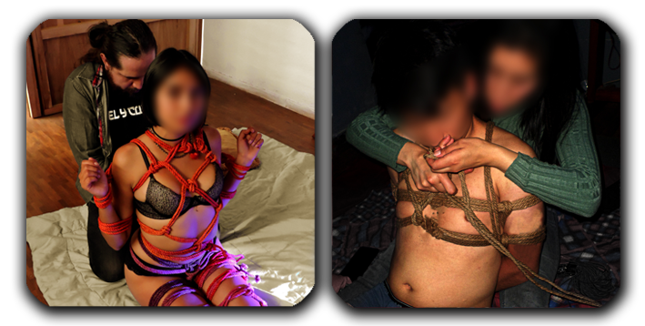
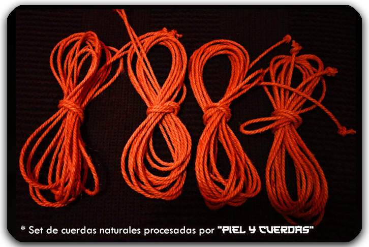
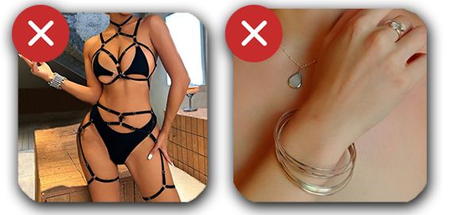
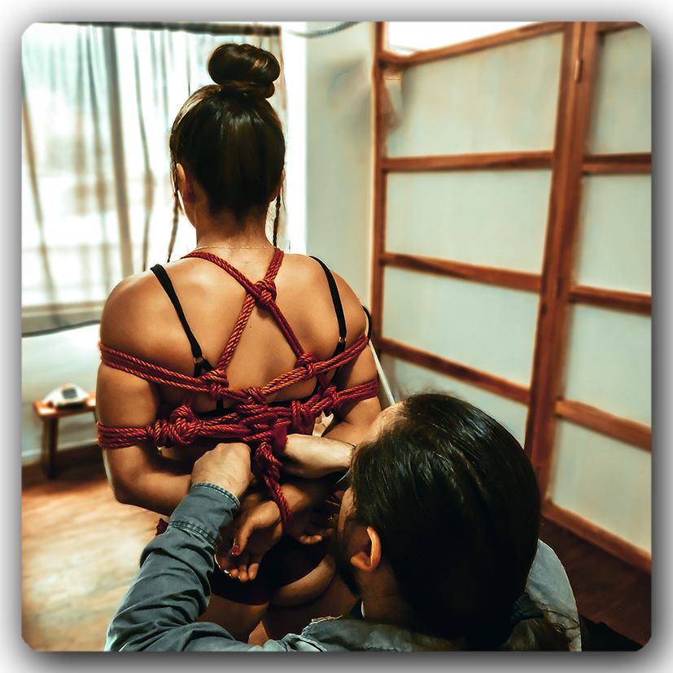
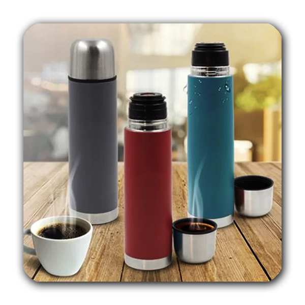

La persona que será atada durante la clase deberá asistir con ropa cómoda que permita dejar la mayor cantidad de piel expuesta posible para la práctica.

Cada pareja debe traer al menos 4 cuerdas de 8 metros cada una. En caso de no contar con cuerdas pueden solicitar
la fabricación de un set de cuerdas acondicionadas para Shibari por $30.00.
(Este pedido deberá hacerse con al menos 4 días de antelación..

No utilizar lencería compleja ni prendas con elementos que puedan enredarse con las cuerdas.

El cabello debe mantenerse recogido para evitar que interfiera con el paso de las cuerdas.

Traer una bebida no alcohólica para consumo personal.
Esto forma parte del protocolo SSC (Safe, Sane and Consensual), un principio ampliamente utilizado en prácticas de cuerda y dinámicas de confianza.
Safe (Seguro): Mantener una adecuada hidratación ayuda a prevenir mareos, fatiga o bajones de presión durante la práctica.
Sane (Sensato): La actividad requiere atención, coordinación y comunicación clara entre las personas participantes. Por este motivo no se permite la participación bajo efectos de alcohol u otras sustancias.
Consensual (Consensuado): Todas las prácticas se realizan únicamente con consentimiento informado y comunicación abierta entre las partes.
Por estas razones, se solicita traer una bebida no alcohólica para consumo personal durante la clase.

Las personas que lleguen bajo los efectos de alcohol o sustancias no serán admitidas en la clase y no se realizará devolución del dinero.
Política de reservas: Los talleres tienen cupos limitados y la reserva se confirma únicamente con el pago. Al reservar, ese cupo deja de ofrecerse a otras personas, por lo que no se realizan devoluciones por cancelaciones. En caso de no poder asistir,
el cupo puede transferirse a otra persona o, a criterio de la organización, usarse como crédito para un futuro taller.
Política de reservas: Los talleres tienen cupos limitados y la reserva se confirma únicamente con el pago. Al reservar, ese cupo deja de ofrecerse a otras personas, por lo que no se realizan devoluciones por cancelaciones. En caso de no poder asistir,
el cupo puede transferirse a otra persona o, a criterio de la organización, usarse como crédito para un futuro taller.
Durante el desarrollo de la clase se realizarán fotografías con fines de documentación y divulgación del proyecto.
Para proteger la privacidad de los participantes, los rostros serán difuminados antes de cualquier publicación.